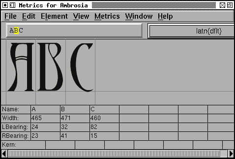
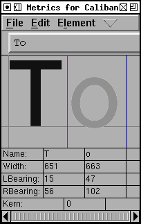
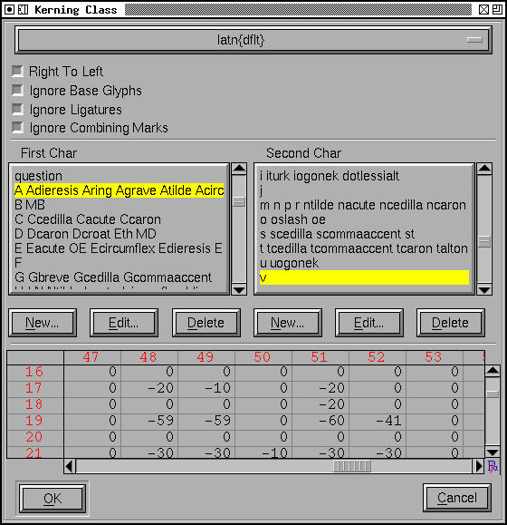
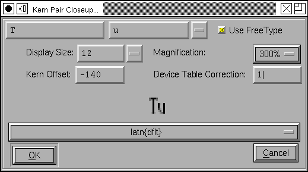

The metrics view allows you to examine how glyphs look together and to alter the spacing between them. You may apply various OpenType features to those glyphs and see how they are altered.
If the metrics view is created from the font view then any selected glyphs (well, the first 15 or so) will be displayed in the view in the order they were selected. If it is created from an outline or bitmap glyph view then only that glyph is displayed. If it is created from a bitmap glyph view (or from the font view when that view is displaying a bitmap font) then the metrics view will display bitmaps, but will not allow you to edit the bitmaps metrics (you must do your metrics editing in a view displaying outlines).
Underneath the menu bar is a series of fields. The first shows the current script and language combination being used to determine what lookups to apply within the selected features, the next is a text field which allows you to enter additional unicode characters to be displayed, and finally there is a pulldown list of lookup subtables, this will be used if you create a kerning pair (the kerning pair will become part of that subtable). Underneath that is a list showing all features defined in the font. You may select which ones you want to be active in this display. (Note the features are listed in alphabetic order -- this is not the order in which the lookups will be executed (or not usually the order)).
If you wish to enter characters you cannot type:
The mid portion of the view is taken up with the displayed glyphs. For outline glyphs these are sized so that the em-height of the font just fits in this region. There are grey lines between the glyphs marking the origin of the glyph on the right and the width of the glyph on the left. The baseline is also drawn in grey.
A metrics view may be in one of three modes (Metrics->Window Type)
One of the glyphs is active. That glyph has a green line on its left (at its origin) and a blue line on its right (its width). You may change the width by dragging this line. You may change the left side bearing (lbearing) of the glyph by clicking on the glyph and dragging it left or right. You may change the kerning between this glyph and the one to its left by dragging the green line around. (If you wish to create a Device Table for small pixel sizes you must use the Kern Pair Closeup dialog)
|  |  |
The active glyph may be changed by clicking on any of the glyphs.
Underneath the display area are a set of text fields. You may type in new numbers for any of these fields to change the corresponding metrics of the glyph.
The up and down arrow keys will increase and decrease the field's value by a single unit. Holding Shift-up or -down will accelerate this by 10 and Ctrl-Shift-up or -down by 5. Holding Alt-up, -down, -left or -right will move the cursor to the field above, below, left or right.
Sometimes it is handy to be able to load a list of words into the metrics view (so that you don't have to type them one by one). The text entry field has a pull down list, and at the bottom of this list is an entry to load a word list from a file. Once you select this, and your file, the pulldown list will ill up with choices. You may use the up/down arrow keys to move through the word list.
If the first glyph to be displayed is in Hebrew or Arabic (or any other right to left language) then the entire display area will be shown right to left
Note there is a very complicated algorithm given in the Unicode spec for displaying mixed right to left and left to right passages. This is not followed here. The direction determination is done by the first glyph alone.


You can make the window display vertical metrics and kerning by View->Vertical. (This is only available if your font has vertical metrics enabled, Element->Font Info->General->Has Vertical Metrics). In this mode you can change vertical width, vertical kerning, etc.
If you double click on one of the displayed glyphs then FontForge will bring up a outline glyph view to allow you to edit that glyph.

In the example at left, the input text is an "f" followed by an "i", and
as the 'liga' feature is turned on, this becomes the "fi" ligature. Then
an "a" followed by a "b", but as the 'smcp' (small caps) feature is on these
become small-caps letters rather than lower case. Finally "1", "/" and "2"
were entered, and as the 'frac' (diagonal fractions) feature is turned on
these three input glyphs become the onehalf glyph on output.
Note: This window is not a full blown layout engine. All the glyphs will
be treated as if they were in the same script, and all features will be applied
to all glyphs. Baseline alignment will not be done.
Most of us are stuck with keyboards that only have ASCII characters on them. Or at best some sub-set of ISO 8859-1 characters. How can the full range of unicode characters be entered?
X supplies a sophisticated mechanism for entering characters via stand-alone input method servers. FontForge supports this to some extent now.
Aside from that, many versions of X supply a "Compose Character" key, or something equivalent. The X software will map a sequence of keystrokes to one character in whatever the native encoding may be.
My keyboard doesn't have such a key, and my X doesn't do this. But I have implemented something along those lines for those of us with less expensive keyboards. If you are in a mode where text entry is possible then press the F12 key and follow it by a series of keystrokes. Accented characters may be built using the following:
| ` | grave accent | 0 | ring | " | double grave (or tonos) | |||
| ' | acute accent | / | slash | . | dot above | |||
| : | diaeresis (umlaut) | 7 | breve | , | dot below | |||
| ^ | circumflex | 6 | caron | 5 | cedilla | |||
| ~ | tilde | _ | macron | 4 | ogonec |
So  may be built by [F12] ^ A, and A with diaeresis and macron may be built with [F12] : _ A.
Greek letters may also be created. If you start with [F12] @ and follow with:
| A | Alpha | B | Beta | C | Chi | |||
| D | Delta | E | Epsilon | F | Phi | |||
| G | Gamma | H | Eta | I | Iota | |||
| J | (technical) Theta | K | Kappa | L | Lamda | |||
| M | Mu | N | Nu | O | Omicron | |||
| P | Pi | Q | Theta | R | Rho | |||
| S | Sigma | T | Tau | U | Upsilon | |||
| V | final sigma | W | Omega | X | Xi | |||
| Y | Psi | Z | Zeta |
This is the mapping used by the Symbol font. (Lower case letters are created similarly so [F12] @ a yields a lower case alpha). Accented greek letters may also be built up, [F12] @ " A yields Alpha tonos.
Finally the following special characters may be built:
| [F12] <space> | <no break space> | [F12] * | ° | [F12] @ * | <bullet> | |||
| [F12] @ <space> | <em space> | [F12] # | £ | [F12] @ # | ¥ | |||
| [F12] $ | <euro> | [F12] @ $ | ¢ | [F12] ! | ¡ | |||
| [F12] + | ± | [F12] - | <soft-hyphen> | [F12] @ - | <en dash> | |||
| [F12] @ . | · | [F12] 7 2 | ½ | [F12] ; | . . . | |||
| [F12] < | <less or equal> | [F12] > | <greater or equal> | [F12] @ > | <triangle bullet> | |||
| [F12] = | <quote dash> | [F12] ? | ¿ | [F12] A | Å | |||
| [F12] C | Ç | [F12] H | <right index> | [F12] O | <OE lig> | |||
| [F12] P | § | [F12] [ | <single right quote> | [F12] ] | <single right quote> | |||
| [F12] \ | « | [F12] @ \ | <single guillemot> | [F12] a | å | |||
| [F12] c | ç | [F12] f | <female sign> | [F12] g | © | |||
| [F12] h | <left index> | [F12] m | <male sign> | [F12] o | <oe lig> | |||
| [F12] p | ¶ | [F12] r | ® | [F12] s | ß | |||
| [F12] t | TM | [F12] z | <long s> | [F12] { | <left dbl quote> | |||
| [F12] } | <right dbl quote> | [F12] | | » | [F12] @ | | <right single guillemot> |
This still misses most unicode characters. But pressing [F12] twice will bring up a dialog which will allow you to select any character in unicode.
If you type [F12] by mistake then an Escape will get you out of accent mode.
Often it is a good idea to create classes of glyphs which kern alike. For example A, À, Á, Â, Â, Ã and Ä probably all kern alike (but note that o and ô probably kern quite differently after a T), and rather than create separate kerning pairs for each of the "A"s above, they could all be placed in a class of glyphs which kern alike.
The Element->Font Info->Lookups provides
an interface to
this. It brings up a dialog showing all the GPOS lookups (of which kerning is one)
and their subtables. Each set of kerning classes lives in its own subtable.
When you create a kerning subtable you will be asked whether you want a set
of individual kerning pairs or a matrix based on kerning classes.
It brings up a dialog showing all the GPOS lookups (of which kerning is one)
and their subtables. Each set of kerning classes lives in its own subtable.
When you create a kerning subtable you will be asked whether you want a set
of individual kerning pairs or a matrix based on kerning classes.
If you choose the latter then you may have fontforge try to guess a good
set of classes for you (it will look at the glyphs selected and divide them
into classes). The Intra Class Distance gives you some control
over how picky fontforge will be about what goes into a class. (This can
be thought of as being in em-units and being, roughly, the average error
in how two different glyphs interact with other glyphs). A value of 1 is
very picky and almost all classes will have one member. A value of 20 (in
a 1000em font) is fairly loose.
The Default Separation and Min Kern fields are
used in AutoKerning. The goal of kerning to to make the optical separation
between all glyphs to be constant, and the Default Separation
field specifies that desired value. The Min Kern value
is simply to prevent the dialog from filling with useless junk. If AutoKerning
suggests that two glyphs should be kerned by 1 em unit then this won't make
any difference to the human eye and there is no point in including it. So
if the kerning value (in absolute value) suggested by AutoKern is less than
Min Kern then fontforge will ignore that value. Selecting []
Touching makes AutoKerning work in a slightly different way, instead
of trying to make the optical distance be the desired value this attempts
to make the minimum separation be the desired value (This is rarely useful,
but occasionally people want to set text where the letters actually touch
one another). The [] Only kern glyphs closer flag means that
FontForge will only generate negative kerning offsets, that is, offsets which
will move glyphs closer together.
Each kerning class belongs to a lookup subtable and the subtable name is displayed at the top of the dialog.
But the more interesting stuff follows this. A kerning by class actually consists of two sets of classes -- one set for the first glyph of the pair and one for the second glyph of the pair. A glyph class consists of a space separated list of glyph names (For most glyphs you may also enter the unicode character itself, and fontforge will convert that to a glyph name).
To edit a class, simply type in it (at the very bottom of the class list is an entry called <New>, clicking here will create a new class). Pressing the little rectangle at the right of the class will allow you to define your class as a selection in a font view widget. You may delete a class by selecting it (clicking in it) and pressing the [Delete] button.
The kerning classes can be fairly complex. You can search for a glyph by typing its name in the "Select Glyph" field. This will highlight the class containing that glyph.
Class 0 is usually magic. You almost never set it, it contains any glyphs not mentioned elsewhere. In OpenType, class 0 of the first character can be set and behaves normally.
Underneath the classes is a display of kerning values. The possible first glyph classes are listed vertically, the possible second glyph classes are listed horizontally. When you select a class (in one of the class lists above) the display of kerning values will scroll to display that class. If you move the mouse into the display and let it rest, a popup window will appear showing the glyphs that make up the classes which intersect at that point. If you click on a kerning value in the display, the dlg displays a visual representation of that amount of kerning.
The kerning dialog displays a representative glyph from each class and allows you to adjust the kerning between them (and all other class members of each class). You can select which glyphs to display in the pulldown menus. You can enter a new kerning offset by typing in a value, or you can click on the second glyph of the kern pair and drag it around.
You can also create something called a "Device Table", a name which is not very informative. When a font is rasterized at small pixel sizes rounding errors become important, and this is particularly true of kerning, there are three things that get rounded: The locations of the outlines (to fit them to a pixel grid), the advance widths of the glyphs, and the kerning value itself. The result is that something which looks perfectly kerned at 150pixels may be either too close or too far apart at 12pixels
 |
|
Kerning at 150 pixels |
Kerning at 12 pixels |
You could adjust the kerning value slightly until it looked right at 12pixels, of course, but that might break it at 14 pixels. So OpenType has the concept of a Device Table which allows you to add small corrections at particular point sizes. Simply set the Display Size to a small, but common, value (say 10-24) and examine the kerning. If the results are ugly then type a value into the "Device Table Correction" field, and this will change the spacing by that many pixels at the given display size (and no other). In the case above a correction of 1 might be appropriate for the 12px display.
Because small pixel sizes can be hard to examine, you can change the magnification (rasterized at the same size, but each pixel made twice as big).
Device Tables may also be created in a number of other cases. The example above was for a kerning class. Kerning pairs may also have tables attached to them with the Metrics->Kern Pair Closeup dialog, which looks similar to the Kerning Class dialog above.
